Does GitHub render animated SVG?
Yes, when you embed it as an image in Markdown. The animation is built into the SVG with CSS. GitHub caches hosted images, so updates may take time to appear.
Turn a few steps into an animated SVG for your GitHub README.

Six finished workflows. Choose one and make it yours.
Editing and SVG downloads stay local. Hosted image links send the settings in their URL to our service. The editor loads interface fonts from Google; optional workflow fonts request the family and weight through our service. No analytics or tracking. Privacy policy.
Projects using readme-flow-svg. Add yours with a pull request.
Add your repo to community/repos.json and link to your workflow in the
pull request.
A README should help someone understand a project quickly. A small moving diagram can explain the path from input to output without a screen recording or a drawing app.
Yes, when you embed it as an image in Markdown. The animation is built into the SVG with CSS. GitHub caches hosted images, so updates may take time to appear.
A hosted URL is ready to paste and includes your settings. A downloaded SVG lives with your code and needs no image service. Choose “File in your repo” to copy a relative image path.
Every generated SVG includes a reduced-motion media query. Viewers who request less motion see a still diagram. The pause button stops the editor preview; it does not change exports.
Size depends on steps, connections, and fonts. The included examples are small text files; SVG source and the downloaded file show the exact result. Outlined Google Fonts can make exports larger.
Mermaid is useful for diagrams maintained as text. This tool adds movement to a small workflow and exports an image. SVG stays sharp at any size; GIF stores raster frames and suits recorded motion.
Editing and downloads use your browser, and settings are saved on this device. Hosted images send workflow settings in a public URL. The editor loads interface fonts from Google. Optional workflow fonts send the family and weight through our service, without workflow text. Use built-in fonts and a downloaded SVG to keep workflow text off the image service. Read the privacy policy for details.